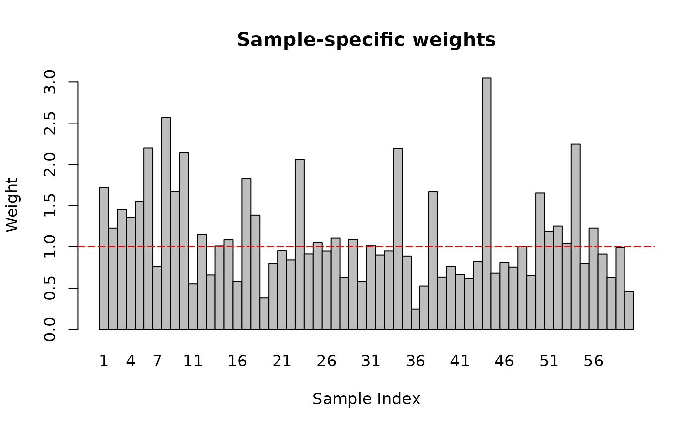
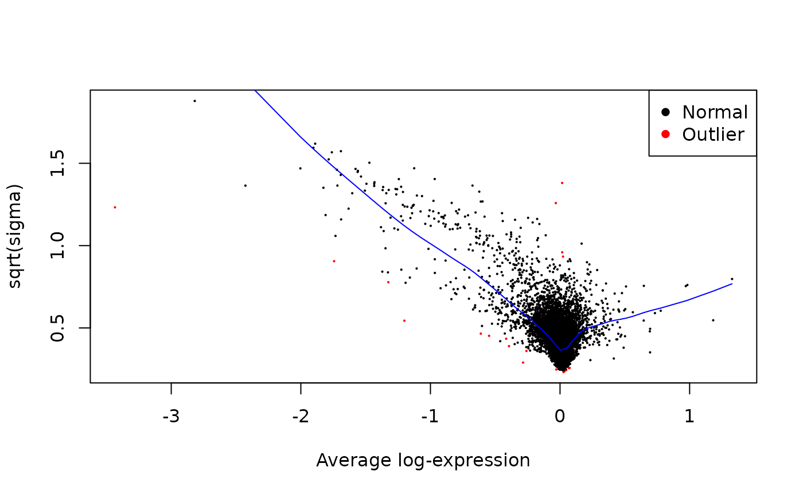
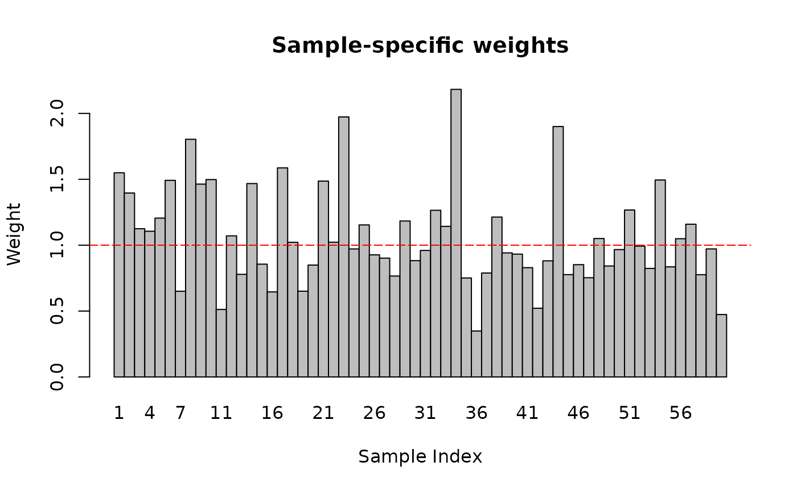
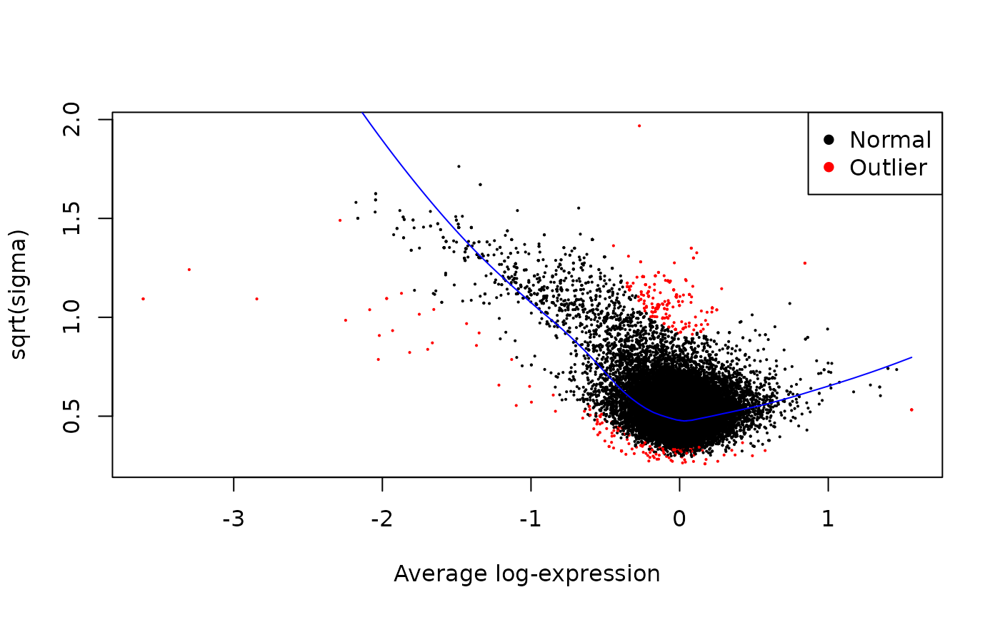
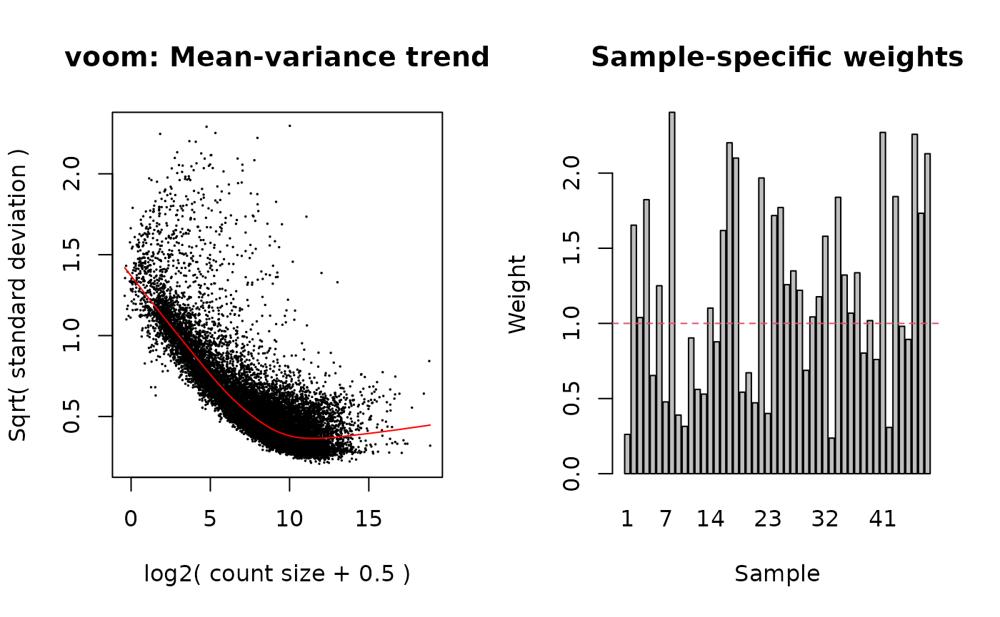
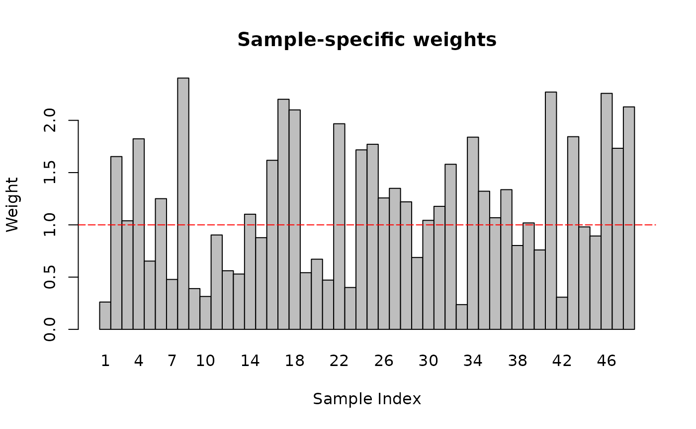
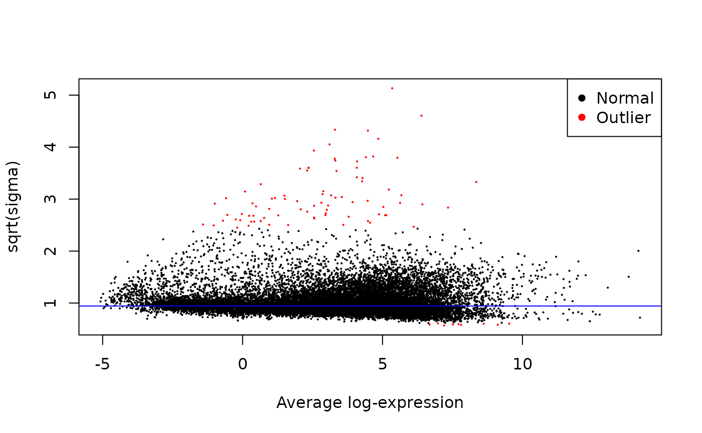

vignettes/WAT_DA.Rmd
WAT_DA.RmdWe will use a wrapper around functions from the limma
package[1] to perform
differential analysis on several sets of contrasts. See
help("limma_full", package = "MotrpacRatTraining6moWAT")
for more details. Volcano plots are created in a separate article.
# Required packages
library(MotrpacRatTraining6moWATData)
library(MotrpacRatTraining6moWAT) # limma_full
library(dplyr)
library(purrr)
# Sex-specific training differences
contr_train <- sprintf("%s_%s - %s_SED",
rep(c("F", "M"), each = 4),
rep(paste0(2^(0:3), "W"), times = 2),
rep(c("F", "M"), each = 4))
# Training-induced sexual dimorphism (sex by timepoint interaction)
contr_diff <- sprintf("(%s) - (%s)",
contr_train[5:8],
contr_train[1:4])
# List of contrast groups
contr_list <- list("trained_vs_SED" = contr_train,
"MvF_SED" = "M_SED - F_SED",
"MvF_exercise_response" = contr_diff)
contr_list#> $trained_vs_SED
#> [1] "F_1W - F_SED" "F_2W - F_SED" "F_4W - F_SED" "F_8W - F_SED" "M_1W - M_SED"
#> [6] "M_2W - M_SED" "M_4W - M_SED" "M_8W - M_SED"
#>
#> $MvF_SED
#> [1] "M_SED - F_SED"
#>
#> $MvF_exercise_response
#> [1] "(M_1W - M_SED) - (F_1W - F_SED)" "(M_2W - M_SED) - (F_2W - F_SED)"
#> [3] "(M_4W - M_SED) - (F_4W - F_SED)" "(M_8W - M_SED) - (F_8W - F_SED)"
PROT_DA <- map2(contr_list, c(TRUE, FALSE, FALSE), function(contrasts, plot) {
limma_full(object = PROT_EXP,
model.str = "~ 0 + exp_group",
coef.str = "exp_group",
contrasts = contrasts,
var.group = "viallabel",
plot = plot) %>%
arrange(contrast, feature) %>%
dplyr::select(-B)
}, .progress = TRUE)
PHOSPHO_DA <- map2(
contr_list, c(TRUE, FALSE, FALSE), function(contrasts, plot) {
limma_full(object = PHOSPHO_EXP,
model.str = "~ 0 + exp_group",
coef.str = "exp_group",
contrasts = contrasts,
var.group = "vialLabel",
plot = plot) %>%
arrange(contrast, feature) %>%
dplyr::select(-B)
}, .progress = TRUE)
# Covariates included in https://doi.org/10.1101/2022.09.21.508770,
# processed in the same way
covariates <- "rin + pct_globin + pct_umi_dup + median_5_3_bias"
TRNSCRPT_DA <- map2(
contr_list, c(TRUE, FALSE, FALSE), function(contrasts, plot) {
limma_full(object = TRNSCRPT_EXP,
model.str = sprintf("~ 0 + exp_group + %s", covariates),
coef.str = "exp_group",
contrasts = contrasts,
var.group = "viallabel",
plot = plot) %>%
arrange(contrast, feature) %>%
dplyr::select(-B)
# entrez_gene is of type character because of the one-to-many
# transcript to gene mapping. Keep this in mind.
})
We will run differential analysis separately for each platform and then combine the results. This way, we can estimate separate mean-variance trends for each platform.
# Platforms for DEA
assays <- unique(fData(METAB_EXP)[["dataset"]])
# Differential analysis results list
METAB_DA <- map(contr_list, function(contrasts) {
map(assays, function(assay) {
message(assay)
# subset to features in group to model separate mean-variance trends
METAB_EXP[fData(METAB_EXP)[["dataset"]] == assay, ] %>%
limma_full(model.str = "~ 0 + exp_group",
coef.str = "exp_group",
contrasts = contrasts,
var.group = "vialLabel") %>%
arrange(contrast, feature) %>%
dplyr::select(-B)
}) %>%
data.table::rbindlist() %>%
mutate(contrast = factor(contrast, levels = unique(contrast)),
adj.P.Val = p.adjust(P.Value, method = "BH")) %>%
arrange(contrast, feature)
})
# Save results
usethis::use_data(PROT_DA, internal = FALSE, overwrite = TRUE,
version = 3, compress = "bzip2")
usethis::use_data(PHOSPHO_DA, internal = FALSE, overwrite = TRUE,
version = 3, compress = "bzip2")
usethis::use_data(TRNSCRPT_DA, internal = FALSE, overwrite = TRUE,
version = 3, compress = "bzip2")
usethis::use_data(METAB_DA, internal = FALSE, overwrite = TRUE,
version = 3, compress = "bzip2")#> R version 4.3.3 (2024-02-29)
#> Platform: x86_64-pc-linux-gnu (64-bit)
#> Running under: Ubuntu 22.04.4 LTS
#>
#> Matrix products: default
#> BLAS: /usr/lib/x86_64-linux-gnu/openblas-pthread/libblas.so.3
#> LAPACK: /usr/lib/x86_64-linux-gnu/openblas-pthread/libopenblasp-r0.3.20.so; LAPACK version 3.10.0
#>
#> locale:
#> [1] LC_CTYPE=C.UTF-8 LC_NUMERIC=C LC_TIME=C.UTF-8
#> [4] LC_COLLATE=C.UTF-8 LC_MONETARY=C.UTF-8 LC_MESSAGES=C.UTF-8
#> [7] LC_PAPER=C.UTF-8 LC_NAME=C LC_ADDRESS=C
#> [10] LC_TELEPHONE=C LC_MEASUREMENT=C.UTF-8 LC_IDENTIFICATION=C
#>
#> time zone: UTC
#> tzcode source: system (glibc)
#>
#> attached base packages:
#> [1] stats graphics grDevices utils datasets methods base
#>
#> other attached packages:
#> [1] purrr_1.0.2 dplyr_1.1.4
#> [3] MotrpacRatTraining6moWAT_1.0.0 Biobase_2.62.0
#> [5] BiocGenerics_0.48.1 MotrpacRatTraining6moWATData_2.0.0
#>
#> loaded via a namespace (and not attached):
#> [1] RColorBrewer_1.1-3 rstudioapi_0.15.0 jsonlite_1.8.8
#> [4] shape_1.4.6.1 magrittr_2.0.3 ggbeeswarm_0.7.2
#> [7] rmarkdown_2.25 GlobalOptions_0.1.2 fs_1.6.3
#> [10] zlibbioc_1.48.0 ragg_1.2.7 vctrs_0.6.5
#> [13] memoise_2.0.1 RCurl_1.98-1.14 base64enc_0.1-3
#> [16] rstatix_0.7.2 htmltools_0.5.7 dynamicTreeCut_1.63-1
#> [19] curl_5.2.1 broom_1.0.5 Formula_1.2-5
#> [22] sass_0.4.8 bslib_0.6.1 htmlwidgets_1.6.4
#> [25] desc_1.4.3 impute_1.76.0 cachem_1.0.8
#> [28] lifecycle_1.0.4 iterators_1.0.14 pkgconfig_2.0.3
#> [31] Matrix_1.6-5 R6_2.5.1 fastmap_1.1.1
#> [34] GenomeInfoDbData_1.2.11 clue_0.3-65 digest_0.6.34
#> [37] colorspace_2.1-0 patchwork_1.2.0 AnnotationDbi_1.64.1
#> [40] S4Vectors_0.40.2 textshaping_0.3.7 Hmisc_5.1-1
#> [43] RSQLite_2.3.5 ggpubr_0.6.0 filelock_1.0.3
#> [46] latex2exp_0.9.6 fansi_1.0.6 httr_1.4.7
#> [49] abind_1.4-5 compiler_4.3.3 withr_3.0.0
#> [52] bit64_4.0.5 doParallel_1.0.17 htmlTable_2.4.2
#> [55] backports_1.4.1 BiocParallel_1.36.0 carData_3.0-5
#> [58] DBI_1.2.2 highr_0.10 ggsignif_0.6.4
#> [61] rjson_0.2.21 tools_4.3.3 vipor_0.4.7
#> [64] foreign_0.8-86 beeswarm_0.4.0 msigdbr_7.5.1
#> [67] nnet_7.3-19 glue_1.7.0 grid_4.3.3
#> [70] checkmate_2.3.1 cluster_2.1.6 fgsea_1.28.0
#> [73] generics_0.1.3 gtable_0.3.4 preprocessCore_1.64.0
#> [76] tidyr_1.3.1 data.table_1.15.2 WGCNA_1.72-5
#> [79] car_3.1-2 utf8_1.2.4 XVector_0.42.0
#> [82] foreach_1.5.2 pillar_1.9.0 stringr_1.5.1
#> [85] babelgene_22.9 limma_3.58.1 circlize_0.4.16
#> [88] splines_4.3.3 BiocFileCache_2.10.1 lattice_0.22-5
#> [91] survival_3.5-8 bit_4.0.5 tidyselect_1.2.0
#> [94] GO.db_3.18.0 ComplexHeatmap_2.18.0 locfit_1.5-9.9
#> [97] Biostrings_2.70.2 knitr_1.45 gridExtra_2.3
#> [100] IRanges_2.36.0 edgeR_4.0.16 stats4_4.3.3
#> [103] xfun_0.42 statmod_1.5.0 matrixStats_1.2.0
#> [106] stringi_1.8.3 yaml_2.3.8 evaluate_0.23
#> [109] codetools_0.2-19 tibble_3.2.1 cli_3.6.2
#> [112] ontologyIndex_2.12 rpart_4.1.23 systemfonts_1.0.5
#> [115] munsell_0.5.0 jquerylib_0.1.4 Rcpp_1.0.12
#> [118] GenomeInfoDb_1.38.6 dbplyr_2.4.0 png_0.1-8
#> [121] fastcluster_1.2.6 parallel_4.3.3 pkgdown_2.0.7
#> [124] ggplot2_3.5.0 blob_1.2.4 bitops_1.0-7
#> [127] scales_1.3.0 crayon_1.5.2 GetoptLong_1.0.5
#> [130] rlang_1.1.3 cowplot_1.1.3 fastmatch_1.1-4
#> [133] KEGGREST_1.42.0